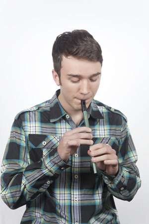
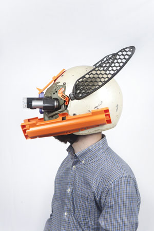
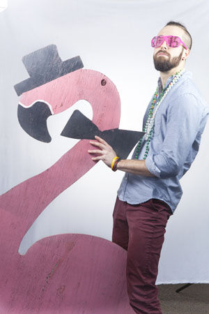

Daniel Cossins
I love soving complex problems and building applications from the ground up. On the side, I enjoy martial arts and water sports.
Rachel Morgan
Hardworking individual who thrives in a fast-paced environment, enjoys speaking fluent sarcasm and has a small obsession with TMNT.
Seth Dorris
Former Active Duty Army Captain turned Software Developer. I love C#/.NET, my two french bulldogs (Pig and Bentley), football and working out.

Ryan Tanay
With a background in digital art computer hardware and networking I'd dabbled in code before NSS. Nothing beats the satisfaction of learning a new technique or technology and using it to solve the problem at hand.

Tom Griffey
Rock 'n roll in human form. Music tech enthusiast and musician who eats new technologies for breakfast. Also passionate about education, civic hacking and youth development through the arts.